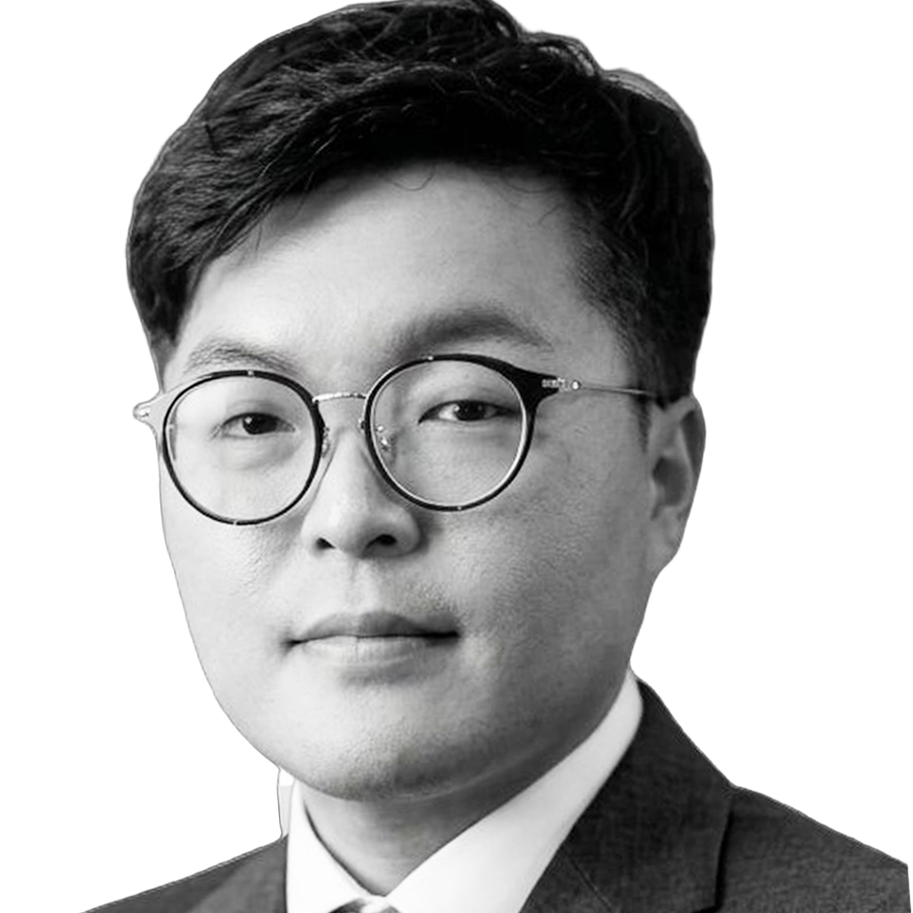

Co-Chief Executive · Founder
Sun-Sik Cho
Co-CEO · Founder & Platform Architect
Co-Chief Executive Officer, Founder, and Platform Architect of SDR Drone Inc. and SUNDORI Co., Ltd. Three decades of unmanned-aviation engineering — from Korea's first commercial unmanned airships in 1991 through the development of the SDR Multi Flight Control system, the SDR-ONE integrated avionics board, and today's defense-standard drone platform. Shares board-level executive authority with the Co-CEO, directing the company's technology roadmap, R&D, and engineering platform strategy.